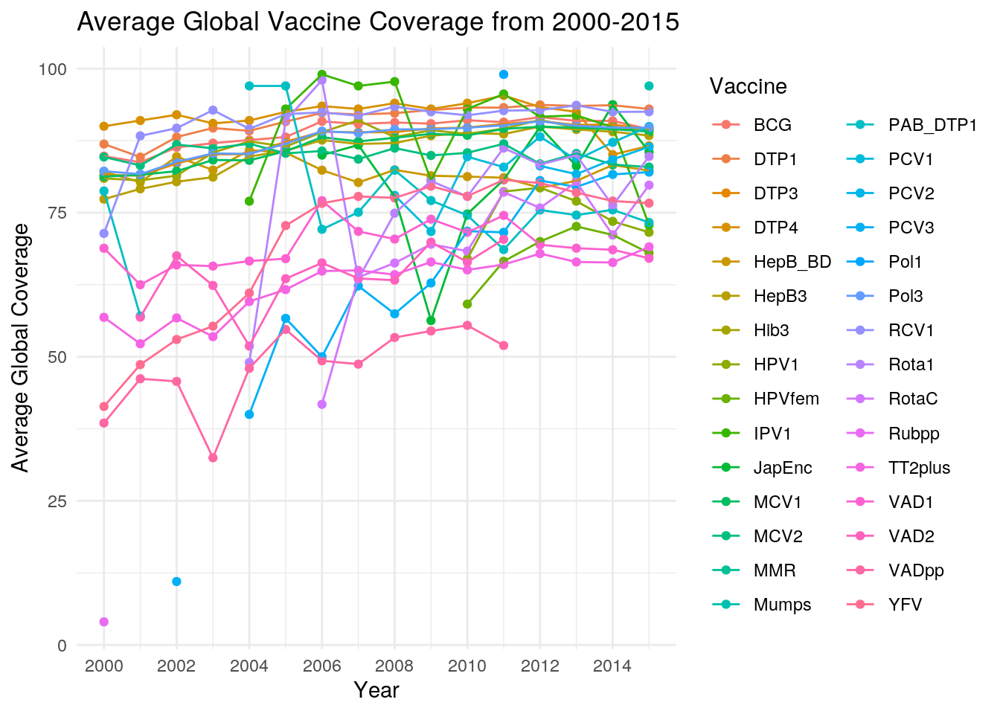
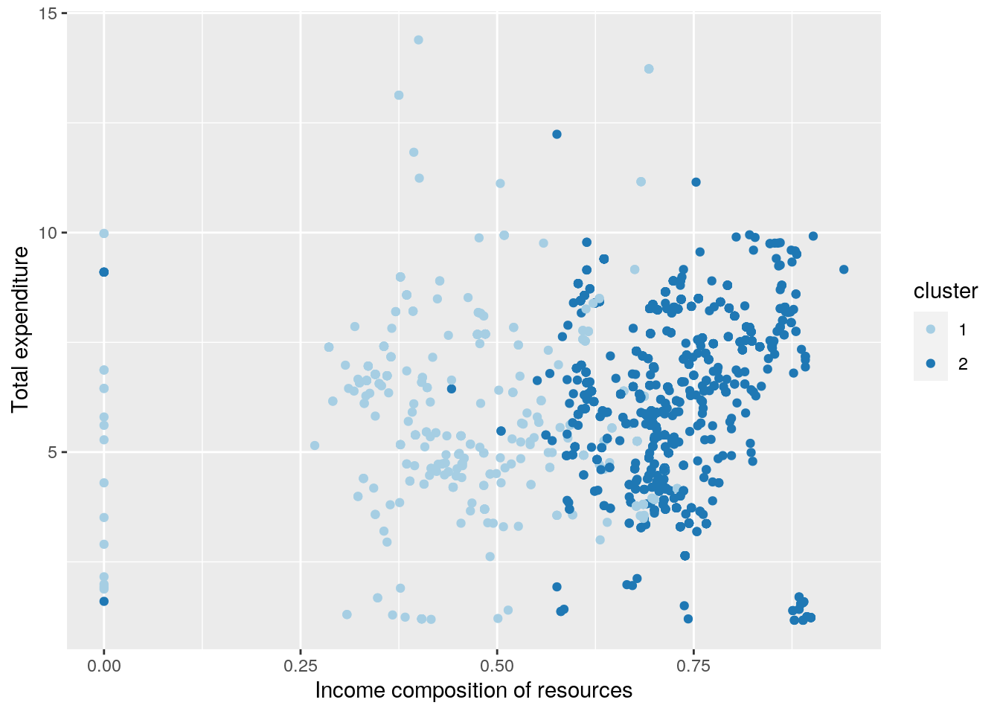

For this project, I was inspired by my Human Infectious Diseases and Clinical Bacteriology courses to study the effects of widespread vaccination coverage on global health. I found my first dataset on the WHO's official website https://apps.who.int/immunization_monitoring/globalsummary/timeseries/tscoveragebcg.html, and it breaks down vaccine coverage by vaccine type, country, and year. Next, I wanted to look primarily at life expectancy per country per year. I looked through a few different datasets online, but the one ended up choosing had many additional variables, such as mortality rate, status of country (developed or developing), and percent expenditure on health of total government expenditure, that I was interested in looking at and thought could potentially elevate the quality of my resulting conclusions. My second dataset came from https://www.kaggle.com/kumarajarshi/life-expectancy-who.
# Here, I'm looking at the structure of each dataset and the
# variables they contain. This also helps me with the join
# function, because I can tell if each dataset has the same
# name for the column I want to join on.
glimpse(vaxes)## Rows: 57,183
## Columns: 8
## $ WHO_REGION <chr> "EMR", "EMR", "EMR", "EMR", "EMR", "EMR", "EMR", "EMR…
## $ ISO_code <chr> "AFG", "AFG", "AFG", "AFG", "AFG", "AFG", "AFG", "AFG…
## $ Cname <chr> "Afghanistan", "Afghanistan", "Afghanistan", "Afghani…
## $ Continent <chr> "Asia", "Asia", "Asia", "Asia", "Asia", "Asia", "Asia…
## $ Vaccine <chr> "BCG", "BCG", "BCG", "BCG", "BCG", "BCG", "BCG", "BCG…
## $ Year <dbl> 1980, 1981, 1982, 1984, 1985, 1986, 1987, 1988, 1989,…
## $ Percent_covrage <dbl> 33, 8, 10, 11, 17, 18, 27, 40, 38, 30, 21, 44, 15, 47…
## $ Asterisc <chr> NA, NA, NA, NA, NA, NA, NA, NA, NA, NA, NA, NA, NA, N…glimpse(life.expect)## Rows: 2,938
## Columns: 22
## $ Country <chr> "Afghanistan", "Afghanistan", "Afgh…
## $ Year <dbl> 2015, 2014, 2013, 2012, 2011, 2010,…
## $ Status <chr> "Developing", "Developing", "Develo…
## $ `Life expectancy` <dbl> 65.0, 59.9, 59.9, 59.5, 59.2, 58.8,…
## $ `Adult Mortality` <dbl> 263, 271, 268, 272, 275, 279, 281, …
## $ `infant deaths` <dbl> 62, 64, 66, 69, 71, 74, 77, 80, 82,…
## $ Alcohol <dbl> 0.01, 0.01, 0.01, 0.01, 0.01, 0.01,…
## $ `percentage expenditure` <dbl> 71.279624, 73.523582, 73.219243, 78…
## $ `Hepatitis B` <dbl> 65, 62, 64, 67, 68, 66, 63, 64, 63,…
## $ Measles <dbl> 1154, 492, 430, 2787, 3013, 1989, 2…
## $ BMI <dbl> 19.1, 18.6, 18.1, 17.6, 17.2, 16.7,…
## $ `under-five deaths` <dbl> 83, 86, 89, 93, 97, 102, 106, 110, …
## $ Polio <dbl> 6, 58, 62, 67, 68, 66, 63, 64, 63, …
## $ `Total expenditure` <dbl> 8.16, 8.18, 8.13, 8.52, 7.87, 9.20,…
## $ Diphtheria <dbl> 65, 62, 64, 67, 68, 66, 63, 64, 63,…
## $ `HIV/AIDS` <dbl> 0.1, 0.1, 0.1, 0.1, 0.1, 0.1, 0.1, …
## $ GDP <dbl> 584.25921, 612.69651, 631.74498, 66…
## $ Population <dbl> 33736494, 327582, 31731688, 3696958…
## $ `thinness 1-19 years` <dbl> 17.2, 17.5, 17.7, 17.9, 18.2, 18.4,…
## $ `thinness 5-9 years` <dbl> 17.3, 17.5, 17.7, 18.0, 18.2, 18.4,…
## $ `Income composition of resources` <dbl> 0.479, 0.476, 0.470, 0.463, 0.454, …
## $ Schooling <dbl> 10.1, 10.0, 9.9, 9.8, 9.5, 9.2, 8.9…# Now, I want to join my datasets by both Year and Country,
# but my vaxes dataset has a different name for countries. In
# order to get inner_join to recognize that both country and
# year are the same variable in both datasets, I need to
# rename country
names(vaxes)[3] <- "Country"
# I can check how many observations are dumped after the
# inner join by determining how many rows are in both
# datasets.
setdiff(vaxes$Country, life.expect$Country)## [1] "Andorra" "Czech Republic" "Eswatini" "North Macedonia"setdiff(life.expect$Country, vaxes$Country)## [1] "Czechia"
## [2] "Swaziland"
## [3] "The former Yugoslav republic of Macedonia"# We can see that a total of 7 countries were left off of our
# comprehensive joined dataset: three from the life.expect
# dataset, and four from the vaxes dataset. Here, I perform
# the join and assign it to a new variable.
proj <- inner_join(vaxes, life.expect)At first, I tried to join my dataset on the Country column of both, but because both of my datasets also had Year columns, those were not reconciled and my resulting datset contained a confusing mix of data, where the years for each dataset didn't match up. So some values, originally from the life.expect dataset were for one year and others, originally from the vaxes dataset, came from a completely different year. Obviously, this isn't very useful because you can't reasonably compare the vaccine coverage from 1980 to the life expectancy of a country in 2010. Therefore, I removed the "by = " function, and it looks like inner_join was able to determine on its own which columns matched up (Country and Year), and make sure both of those matched up in the final join.
# We can look at how many vaccines are available in this
# dataset, and we can confirm that every vaccine type was
# applied to each country, even if its percent coverage value
# is NA
proj %>% group_by(Vaccine) %>% unique() %>% summarize(n())## # A tibble: 30 x 2
## Vaccine `n()`
## <chr> <int>
## 1 BCG 3633
## 2 DTP1 3633
## 3 DTP3 3633
## 4 DTP4 3633
## 5 HepB_BD 3633
## 6 HepB3 3633
## 7 Hib3 3633
## 8 HPV1 3633
## 9 HPVfem 3633
## 10 IPV1 3633
## # … with 20 more rowsTo get an idea of the overall vaccine coverage in each country, I can add up all of the percent coverages for each vaccine, and divide by the total maximum possible coverage, which is 100% of all 30 vaccines. Then, I can look at which country has the greatest overall vaccine coverage.
proj %>% group_by(Country)## # A tibble: 108,990 x 25
## # Groups: Country [188]
## WHO_REGION ISO_code Country Continent Year Asterisc Status `Life expectanc…
## <chr> <chr> <chr> <chr> <dbl> <chr> <chr> <dbl>
## 1 EMR AFG Afghan… Asia 2000 <NA> Devel… 54.8
## 2 EMR AFG Afghan… Asia 2000 <NA> Devel… 54.8
## 3 EMR AFG Afghan… Asia 2000 <NA> Devel… 54.8
## 4 EMR AFG Afghan… Asia 2000 <NA> Devel… 54.8
## 5 EMR AFG Afghan… Asia 2000 <NA> Devel… 54.8
## 6 EMR AFG Afghan… Asia 2000 <NA> Devel… 54.8
## 7 EMR AFG Afghan… Asia 2000 <NA> Devel… 54.8
## 8 EMR AFG Afghan… Asia 2000 <NA> Devel… 54.8
## 9 EMR AFG Afghan… Asia 2000 <NA> Devel… 54.8
## 10 EMR AFG Afghan… Asia 2000 <NA> Devel… 54.8
## # … with 108,980 more rows, and 17 more variables: `Adult Mortality` <dbl>,
## # `infant deaths` <dbl>, Alcohol <dbl>, `percentage expenditure` <dbl>,
## # Measles <dbl>, BMI <dbl>, `under-five deaths` <dbl>, `Total
## # expenditure` <dbl>, `HIV/AIDS` <dbl>, GDP <dbl>, Population <dbl>,
## # `thinness 1-19 years` <dbl>, `thinness 5-9 years` <dbl>, `Income
## # composition of resources` <dbl>, Schooling <dbl>, Vaccine <chr>,
## # Percent_Coverage <dbl>proj_extended <- proj %>% group_by(Country) %>% mutate(overall_coverage = (sum(Percent_Coverage,
na.rm = T)/(30 * 100)))
proj_extended %>% arrange(-overall_coverage)## # A tibble: 108,990 x 26
## # Groups: Country [188]
## WHO_REGION ISO_code Country Continent Year Asterisc Status `Life expectanc…
## <chr> <chr> <chr> <chr> <dbl> <chr> <chr> <dbl>
## 1 EMR OMN Oman Asia 2000 <NA> Devel… 72.6
## 2 EMR OMN Oman Asia 2000 <NA> Devel… 72.6
## 3 EMR OMN Oman Asia 2000 <NA> Devel… 72.6
## 4 EMR OMN Oman Asia 2000 <NA> Devel… 72.6
## 5 EMR OMN Oman Asia 2000 <NA> Devel… 72.6
## 6 EMR OMN Oman Asia 2000 <NA> Devel… 72.6
## 7 EMR OMN Oman Asia 2000 <NA> Devel… 72.6
## 8 EMR OMN Oman Asia 2000 <NA> Devel… 72.6
## 9 EMR OMN Oman Asia 2000 <NA> Devel… 72.6
## 10 EMR OMN Oman Asia 2000 <NA> Devel… 72.6
## # … with 108,980 more rows, and 18 more variables: `Adult Mortality` <dbl>,
## # `infant deaths` <dbl>, Alcohol <dbl>, `percentage expenditure` <dbl>,
## # Measles <dbl>, BMI <dbl>, `under-five deaths` <dbl>, `Total
## # expenditure` <dbl>, `HIV/AIDS` <dbl>, GDP <dbl>, Population <dbl>,
## # `thinness 1-19 years` <dbl>, `thinness 5-9 years` <dbl>, `Income
## # composition of resources` <dbl>, Schooling <dbl>, Vaccine <chr>,
## # Percent_Coverage <dbl>, overall_coverage <dbl># From here, we can see that Oman looks to have the highest
# overall vaccine coverage.My dataset includes an Asterisc column, where countries recieve an * if they report vaccine coverage over 99.5%. Originally, I tried to use this to confirm which country has the most vaccines with asterisks in that column, but I realized that that column was not accurate upon downloading. Instead, I can look at the countries that have a percent coverage vale of over 99.
proj %>% group_by(Country) %>% unique %>% filter(Percent_Coverage <=
99) %>% summarise(n = n()) %>% arrange(-n)## # A tibble: 188 x 2
## Country n
## <chr> <int>
## 1 Panama 241
## 2 Oman 236
## 3 Morocco 222
## 4 Bahrain 219
## 5 Brazil 219
## 6 Honduras 218
## 7 Peru 215
## 8 South Africa 211
## 9 Ecuador 210
## 10 Syrian Arab Republic 208
## # … with 178 more rows# From this, we can see that Panama and Oman have the
# greatest number of reported coverages over 99%. I believe
# the reason Panama shows up here as higher vaccine coverage
# and not in my previous calculation because although Panema
# has more vaccines that have >90% coverage, they do not have
# data available for other vaccines at coverages of below
# 99%, while Omen does. Therefore, I can confirm that my
# generated variable to determine overall coverage is
# accurate, and a better predictor than the Asterisc variable
# built into my dataset.Next, we can look at the proportion of developed vs developing countries in this dataset, grouped by continent.
proj %>% group_by(Continent, Status) %>% summarize(n())## # A tibble: 10 x 3
## # Groups: Continent [6]
## Continent Status `n()`
## <chr> <chr> <int>
## 1 Africa Developing 31860
## 2 Asia Developed 1470
## 3 Asia Developing 26850
## 4 Australia Developed 870
## 5 Australia Developing 5010
## 6 Europe Developed 14610
## 7 Europe Developing 5940
## 8 North America Developed 510
## 9 North America Developing 14220
## 10 South America Developing 7650# From this, we can see that all countries in Africa and
# South America were labeled as Developing. To find the
# proportion of the developed countries, we can use the code
# below.
proj %>% group_by(Continent) %>% summarize(mean(Status == "Developing"))## # A tibble: 6 x 2
## Continent `mean(Status == "Developing")`
## <chr> <dbl>
## 1 Africa 1
## 2 Asia 0.948
## 3 Australia 0.852
## 4 Europe 0.289
## 5 North America 0.965
## 6 South America 1# We can look at the average life expectancy of each country
# in 2015
proj %>% group_by(Country) %>% filter(Year == 2015) %>% summarize(mean(`Life expectancy`,
na.rm = T))## # A tibble: 179 x 2
## Country `mean(\`Life expectancy\`, na.rm = T)`
## <chr> <dbl>
## 1 Afghanistan 65
## 2 Albania 77.8
## 3 Algeria 75.6
## 4 Angola 52.4
## 5 Antigua and Barbuda 76.4
## 6 Argentina 76.3
## 7 Armenia 74.8
## 8 Australia 82.8
## 9 Azerbaijan 72.7
## 10 Bahamas 76.1
## # … with 169 more rows# We can also look at the average life expectancy across the
# globe during 2015.
proj %>% filter(Year == 2015) %>% summarise(mean(`Life expectancy`,
na.rm = T))## # A tibble: 1 x 1
## `mean(\`Life expectancy\`, na.rm = T)`
## <dbl>
## 1 71.7# Next, we can extract countries that had a life expectancy
# of over 71.71 years in 2015 and
long_life <- proj %>% filter(Year == 2015) %>% filter(`Life expectancy` >=
71.71)
# What proportion of these is considered to be a 'Developing'
# country?
long_life %>% summarise(mean(Status == "Developing"))## # A tibble: 1 x 1
## `mean(Status == "Developing")`
## <dbl>
## 1 0.755# We can determine that 75.5% of countries that have above
# the global average for life expectancy are considered
# 'Developing'# Here, were looking at countries with the greatest average
# expendature on healthcare, as a percentage of total GDP
# form 2000-2015.
proj %>% group_by(Country) %>% summarize(avg_expend = mean(`Total expenditure`,
na.rm = T), sd_expend = sd(`Total expenditure`, na.rm = T)) %>%
arrange(-avg_expend)## # A tibble: 188 x 3
## Country avg_expend sd_expend
## <chr> <dbl> <dbl>
## 1 Marshall Islands 17.2 0
## 2 Tuvalu 16.6 0
## 3 United States of America 15.7 1.31
## 4 Micronesia (Federated States of) 11.3 3.26
## 5 Sweden 9.93 1.23
## 6 Greece 9.31 0.561
## 7 Palau 9.27 0
## 8 New Zealand 9.14 2.74
## 9 Norway 9.09 0.484
## 10 Uruguay 8.9 1.50
## # … with 178 more rows# We can also look at the values of GDP for countries
# compared to their overall coverage. I filtered by a single
# vaccine,
proj_extended %>% mutate(overall_GDP = mean(GDP)) %>% filter(Year ==
2000, Vaccine == "BCG") %>% select(overall_GDP, overall_coverage) %>%
arrange(-overall_coverage)## # A tibble: 209 x 3
## # Groups: Country [170]
## Country overall_GDP overall_coverage
## <chr> <dbl> <dbl>
## 1 Oman 7831. 7.57
## 2 Oman 7831. 7.57
## 3 Bahrain 11054. 6.77
## 4 Brazil 6143. 6.67
## 5 Brazil 6143. 6.67
## 6 Honduras 1502. 6.47
## 7 Honduras 1502. 6.47
## 8 Panama 5418. 6.39
## 9 Panama 5418. 6.39
## 10 Mexico 5322. 6.25
## # … with 199 more rows#Build correlation matrix
cormat <- proj %>% select_if(is.numeric) %>% cor(use="pair")
tidycor <- cormat %>% as.data.frame %>% rownames_to_column("var1") %>%
pivot_longer(-1,names_to="var2",values_to="correlation")
tidycor## # A tibble: 324 x 3
## var1 var2 correlation
## <chr> <chr> <dbl>
## 1 Year Year 1
## 2 Year Life expectancy 0.164
## 3 Year Adult Mortality -0.0900
## 4 Year infant deaths -0.0430
## 5 Year Alcohol -0.0603
## 6 Year percentage expenditure 0.0275
## 7 Year Measles -0.0771
## 8 Year BMI 0.110
## 9 Year under-five deaths -0.0473
## 10 Year Total expenditure 0.0907
## # … with 314 more rows#Visualizing the matrix
tidycor%>%ggplot(aes(var1,var2,fill=correlation))+
geom_tile()+
scale_fill_gradient2(low="red",mid="orange",high="yellow")+
geom_text(aes(label=round(correlation,2)),color = "black", size = 1)+ #overlay values
theme(axis.text.x = element_text(angle = 90, hjust=1))+ #flips x-axis labels
coord_fixed() #makes it squareHere, we are able to view how all of my numeric variables correlate to one another. It can be seen that variables such as percentage expendature and GDP, and years of schooling and income composition of resources (amount of income contributed to public resources) are highly correlated with one another, which means they are good predictors for the other. However, variables like thinness and deaths per 1,000 births due to HIV/AIDS are generally not very helpful in the sense that they generally do not correlate well with the other measured variables.
# Build the graph layer-by-layer.
proj.graph1 <- proj %>% group_by(Vaccine, Year) %>% summarize(mean_coverage = mean(Percent_Coverage,
na.rm = T), .groups = "keep") %>% ggplot(aes(Year, mean_coverage,
color = Vaccine)) + geom_point() + geom_line(aes(group = Vaccine)) +
ggtitle("Average Global Vaccine Coverage from 2000-2015") +
xlab("Year") + ylab("Average Global Coverage") + theme_minimal() +
scale_x_continuous(breaks = seq(2000, 2015, 2))
proj.graph1
proj.graph1 + facet_wrap(~Vaccine)# Could not change the colors, because the color palletes I
# found online did not include enough different colors to
# work for my 30 vaccine variables.Here, I group by vaccine type and year to average the coverage values across all the countries, in order to get a broader outlook of vaccine coverage globally, as time progresses. I can also look at a faceted graph of these values to better track the coverage of a single vaccine over time. The faceted graph may not provide much information in terms of comparing vaccines with similar trends like with the (BCG) and meningococcal (MCV) vaccines, but it does allow us to better see more drastic trends, like with yellow fever (YFV) and rotavirus (RotaC) vaccines, which have been administered at much higher numbers in more recent years. From this data, we can also see where we have insufficient, or truncated data collection in the recent years, such as with the MMR and Mumps vaccines. This data is not immediately useful, but can help inform where there are gaps in the data and direct future data collection methods.
# Next, we can look more specifically at how the vaccine
# coverage is affected by total expendature on
proj %>% ggplot(aes(Continent, `Adult Mortality`, fill = Status)) +
geom_bar(stat = "summary", position = "dodge") + geom_errorbar(stat = "summary",
position = "dodge") + theme_minimal() + scale_fill_brewer(palette = "Greens")It is easy to see that mortality is significantly higher in developing countries compared to developed countries. There are a lot of ways to further explore this, such as looking at access to healthcare, disease prevalance, and amount of infectious disease reservoirs per country that could help explain this phenomenon.
# Fist, we clean up the dataset to include only numeric
# variables and no NA values
proj_cluster <- proj %>% na.omit() %>% select_if(is.numeric)
# Next, we find silhouette values to determine the optimal
# amount of clusters to use.
sil_width <- vector()
for (i in 2:10) {
kms <- kmeans(proj_cluster, centers = i)
sil <- silhouette(kms$cluster, dist(proj_cluster))
sil_width[i] <- mean(sil[, 3])
}
ggplot() + geom_line(aes(x = 1:10, y = sil_width)) + scale_x_continuous(name = "k",
breaks = 1:10)# This tells me to use 2 clusters for further analysis.
pam <- proj_cluster %>% scale %>% pam(2)
# Run our clustering
pam## Medoids:
## ID Year Life expectancy Adult Mortality infant deaths Alcohol
## [1,] 99 0.48275159 -1.3490236 0.7288954 0.1140857 -0.9649668
## [2,] 430 -0.01663502 0.5955278 -0.2906251 -0.2185460 -0.2978299
## percentage expenditure Measles BMI under-five deaths
## [1,] -0.2858779 -0.1548777 -0.7887965 0.1916200
## [2,] -0.2127925 -0.2247289 0.5675919 -0.2294585
## Total expenditure HIV/AIDS GDP Population thinness 1-19 years
## [1,] -0.6268896 -0.0272131 -0.41779270 -0.08056148 0.9963197
## [2,] -0.2731094 -0.3222202 -0.03940409 0.06871705 -0.8588394
## thinness 5-9 years Income composition of resources Schooling
## [1,] 0.9035872 -1.2314074 -1.0669784
## [2,] -0.8828868 0.3297923 0.3095886
## Percent_Coverage
## [1,] NaN
## [2,] NaN
## Clustering vector:
## [1] 1 1 1 1 1 2 2 2 2 2 2 2 2 2 2 2 2 2 2 2 2 2 2 2 2 2 2 2 2 2 2 2 2 1 1 1 1
## [38] 1 1 2 2 2 2 2 2 2 2 2 2 2 2 2 2 2 2 2 2 1 2 2 2 2 2 2 2 2 2 2 2 2 2 2 2 2
## [75] 2 2 2 1 1 1 1 1 1 1 1 1 1 1 1 1 1 1 1 1 1 1 1 1 1 1
## [ reached getOption("max.print") -- omitted 1386 entries ]
## Objective function:
## build swap
## 3.423583 3.255078
##
## Available components:
## [1] "medoids" "id.med" "clustering" "objective" "isolation"
## [6] "clusinfo" "silinfo" "diss" "call" "data"# Now, graph pairwise combinations of variables I'm
# interested in
pamclust <- proj_cluster %>% mutate(cluster = as.factor(pam$clustering))
pamclust %>% ggplot(aes(`Total expenditure`, `Life expectancy`,
color = cluster)) + geom_point() + scale_color_brewer(palette = "Paired")pamclust %>% ggplot(aes(`Income composition of resources`, `Total expenditure`,
color = cluster)) + geom_point() + scale_color_brewer(palette = "Paired")
pamclust %>% ggplot(aes(`Life expectancy`, `Income composition of resources`,
color = cluster)) + geom_point() + scale_color_brewer(palette = "Paired")Here, we can see that with my first cluster, a loose trend can be seen in which there is a group with very high life expectancy and medium-to-low expendature on health, and there is another cluster that has lower lie expectancy and more variation in expendature. In the second plot, we can see grouping based on countries with high income composition of resources (which measures the proportion of income that goes towards healthcare), but there does not seem to be any effect of total expenditure on the grouping, because in both groups, total expendature is distributed very similarly. Finally, with the last plot, we can see a very strong grouping of countries with high income composition of resources and life expectancy, which means that many observations in my dataset can be grouped well using these two variables. Taking into account all of these graphs and looking closely at the data, we can see that cluster 2 on each graph is mainly composed of the developed countries in my dataset.
pam$silinfo$avg.width## [1] 0.3040963pam$silinfo$widths %>% as.data.frame %>% mutate(x = dim(pam$silinfo$widths)[1]:1) %>%
ggplot(aes(x, y = sil_width, fill = as.factor(cluster))) +
geom_bar(stat = "identity") + xlab("") + facet_grid(cluster ~
., scales = "free_y") + coord_flip() + theme(legend.position = "none")plot(pam, which = 2)This shows me that my clustering analysis (with an average silhouette width of 0.3) is not structured well enough to be representative of my data. Perhaps this means that the observations in my dataset are far too varied (since there were so many variables recorded) to be clustered using two groups, even though that was the optimal group size calculated above. This could mean that some further data cleanup should be used to better extrapolate the structure of the overall dataset.